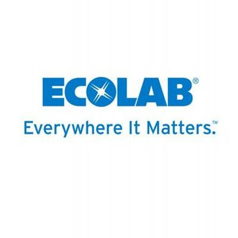
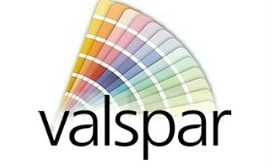

Jim Vang
612-708-5347
6900 Jersey Ave N
Brooklyn Park, MN 55428
Profile
A passion for learning new technology, self-motivated, and self-discipline. Goal oriented to accomplish tasks in a timely manner. Always have a positive attitude and mindset as a team memeber to succeed in any situation.
Coding Experience
- Learn how to write basic HTML and CSS.
- Learn what HTML and CSS are used for in order to create a web page.
Professional Experience

Ecolab
Analytical Lab Technician
July 2016 - Present
- Provide analytical and technical support for analysis on finish product and raw materials.
- Apply a verity of manual and automated wet chemistry techniques such as titrations, viscosity, and qualitative test methods.
- A high degree of acquired chemistry lab skills to carefully review data and investigate unexpected results.
- Multi-task between many projects to ensure the various completion deadlines are met.
- Communicate between other team members of the lab to ensure lab safty, smooth work flow, and goal completion.
- Follow QATMs and SOPs to ensure accurate and reliable results to enter into LIMS.

Valspar
R&D Lab Technician
November 2015 - July 2016
- Prepare formulations for coatings by mixing chemicals and operating lab equiments.
- Product performance test and compatibility for industrial customer support.
- Test paint for viscosity, hiding, film thickness, solids, pot life, and color.
- Communicate with other chemists or scientists for project status and solutions.